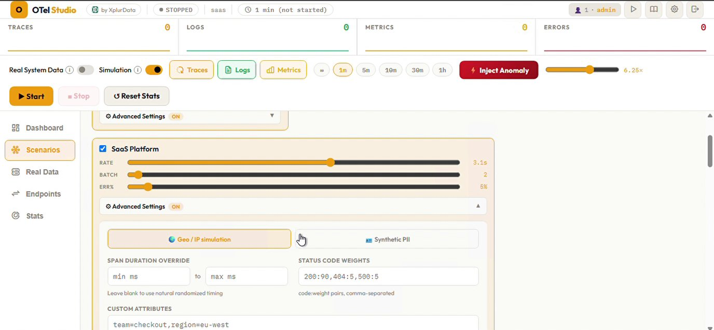

A telemetry data generator, by XplurData
OTel Studio generates that traffic for you — realistic, correlated traces, logs, and metrics across 25 service topologies, sent to any OTel-compatible backend in 60 seconds. No code, no app to deploy.
docker run -d --name otel-studio -p 3002:3002 \ -e OTEL_ENDPOINT="http://your-collector:4317" \ -e OTEL_PROTOCOL="grpc" \ -e SERVICE_NAME="otel-agent" \ -e ENVIRONMENT="production" \ -e ADMIN_PASS="your-password" \ -e MODE_REAL="true" \ -e MODE_SIM="true" \ -v /var/log:/var/log:ro \ -v /var/run/docker.sock:/var/run/docker.sock \ -v otel-data:/data \ otel-studio:latest
Four steps from zero to realistic, correlated telemetry.
Choose from 25 realistic service topologies — or run several at once.
Traces, logs, and metrics with matching trace IDs, real parent-child span chains.
gRPC or HTTP, to one endpoint or several simultaneously.
Grafana, Datadog, SigNoz, Honeycomb, or any OTel-compatible tool — no code required.
Most observability teams can't test their pipelines realistically because they don't have good data generators.
| Tool | Limitation |
|---|---|
telemetrygen | CLI-only, random data, no service topology, no UI |
| hotrod / astronomy-shop | Full demo apps — heavy to deploy, not configurable |
| k6 / Gatling | Load-testing tools, not observability-focused — no trace/log/metric correlation |
| Hand-written scripts | Every team reinvents the same wheel |
Not random noise — actual request chains with parent-child spans, correlated logs, matching metrics.
Web App, Infrastructure, APM, Cloud Native, and Chaos/Stress topologies — real parent-child request chains, not random data.
Logs share trace IDs with the spans that produced them. Search a trace ID, see the matching logs and metrics.
Dedicated error-storm, cardinality-burst, and latency-spike modes for testing alerting and dashboards.
Send to two or more OTel backends simultaneously, with independent TLS/mTLS per endpoint.
Tag generated telemetry with realistic regional IP ranges, or safe RFC 5737 test ranges.
Opt-in, per-scenario synthetic user data for testing redaction and DLP pipelines — never real people's data.
Optionally tail real log files and Docker container logs/metrics alongside simulated traffic.
Grafana Alloy, OTel Collector, Elastic APM, Honeycomb, Jaeger, SigNoz, OpenObserve, Datadog, New Relic, Dynatrace, Lightstep.
Every scenario has an Advanced panel — geo/IP simulation, synthetic PII, custom attributes, span duration overrides, weighted status codes.

Setting up a new o11y stack who need realistic data before they have real production traffic.
Demoing a new backend to stakeholders without waiting on a live integration.
Writing alert rules or dashboards who need controllable error/latency scenarios to test against.
Tools like SigNoz, OpenObserve, and Coroot needing a test data generator for their own CI/testing.
Docker-deployable in under a minute. No account, no cloud dependency.
Read the Quick Start →